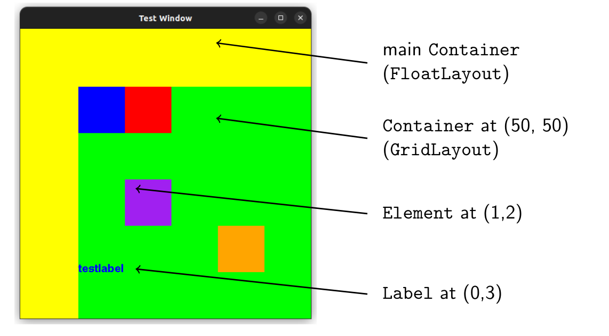
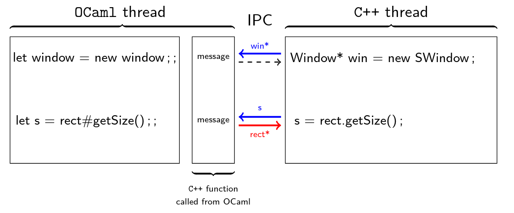
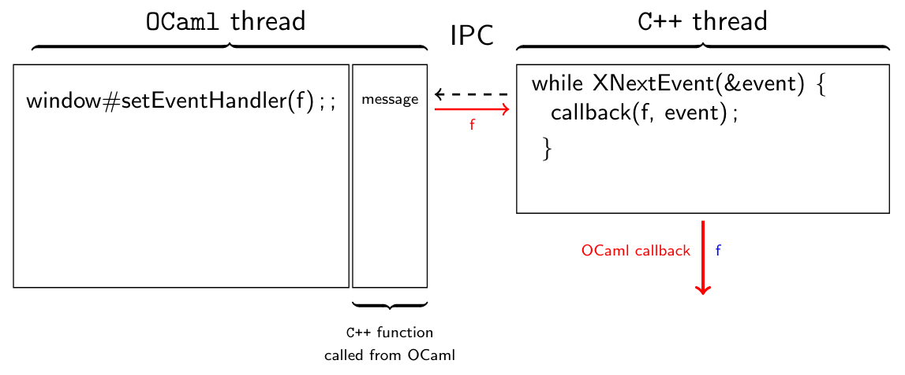

Drawcaml is an Object Oriented graphical library for the programming language OCaml. This project was made during the fist year of Master's degree at ENS de Lyon for the "Integrated project" class and obtained the final grade of 19/20.
DrawCaml was made by a team of 4 students composed of Adrien Obrecht, Damien Lesens, Killian Barbé and myself.
In theoretical computer science, OCaml is a very popular programming language thanks to its functionnal paradigm optimized for recursion as well as its static typing that makes it robust for critical applications. However, Ocaml programs are mainly used as compiled libraries called from classical languages such as C/C++ or Java. For this reason, existing graphical libraries for OCaml are pretty limited and do not offer a user-friendly experience such as most modern graphical modules (ImGUI, Java.Swing, Flutter...).
DrawCaml was made to answer the need for a library that quickly allows to create a graphical interface from an OCaml program, to vizualise results of an experiment for example. Its difference with existing frameworks lays in the use of Object-Oriented Progamming allowed by OCaml to create and use graphical objects. This OOP approach is similar to most of the modern graphical modules proposed for other languages.
In Short
We created DrawCaml to offer OCaml a user-friendly graphical module that can be used to create graphical programs directly from OCaml
The main motivation of DrawCaml is to make the creation of graphical applications easier when using OCaml. In this perspective, we designed graphical classes which can be instanciated to create a graphical window and its elements.
As an example, a window can be created by using the following code:
let window = new DrawCaml.dwindow ~title:"Test Window" ~pos:(50,50) ~size:(500,500) ();;
window#waitForClose ();;
A window can stack elements recursively in containers, which should be stacked in the main container of the window. Containers allow the stacking of elements using predefined layouts, such as GridLayout (elements displayed in a grid) and FloatLayout (elements displayed using absolute position).
To give a more complete example, the following code:
(* create the window *)
let window = new DrawCaml.dwindow ~title:"Test Window" ();;
(* set the window's container to yellow and with a FloatLayout *)
let main_container = new DrawCaml.dcontainer ~layout:FloatLayout ();;
main_container#setBgColor("yellow");;
window#setContainer main_container;
(* create a green container with Grid Layout and add it to the Window *)
let grid_container = new DrawCaml.dcontainer ~layout:GridLayout ();;
grid_container#setBgColor(0,255,0);;
(* add a purple container in the position (1,2) of the grid *)
let container1 = new DrawCaml.dcontainer ();;
container1#setBgColor ("purple");;
grid_container#addElem container1 (1, 2);;
(* add a label at position (0,3) *)
let testLabel = new DrawCaml.dlabel ~text:"testlabel" ();;
testLabel#setColor "blue";;
grid_container#add testLabel ~pos:(0,3) ();;
(* add other elements *)
...
(* keep the window open *)
DrawCaml.waitForClose(window);;
Creates the following result:

DrawCaml is built as a multi-threaded application, in order to allow the operating system to schedule the application. To be more specific, our design is based on 2 threads: one for the OCaml application and one for displaying the window using X11 code (C++). In order to allow Inter-Process Communication (IPC) between our 2 threads, we designed a protocol based on the queueing OCaml calls, wrapped in a C++ instance of the class Action.
Our designed can be described by the following picture:

As described in the picture, IPC system allows us to send requests from OCaml (creating objects, requesting parameters, requesting objects) and get answers from C++ thread.
In order to support dynamic applications, handling user events such as keyboard and mouse inputs is necessary.
Using DrawCaml, an event handler can be defined using a function such as:
let window = new DrawCaml.dwindow ~title:"Test Window" ~pos:(50,50) ~size:(500,500) ();;
let event_handler event =
match event with
| DrawCaml.KeyPressed(Right) -> Printf.printf "Right key got pressed\n%!";
| DrawCaml.KeyReleased(_) -> Printf.printf "A key was released\n%!";
| DrawCaml.MousePressed(x,y,_) -> Printf.printf "The mouse was pressed at position %d %d\n%!" x y;
| _ -> ();
;;
window#setEventHandler event_handler;;
while window#notClosed () do
Unix.sleep 1;
Printf.printf "Window is still open\n%!";
done;;
Under the hood, the OCaml function is given to the C++ thread which listens the events and when an event is caught, the function is executed by the C++ thread.

If you want to learn more about DrawCaml, you may take a look at the following ressources: